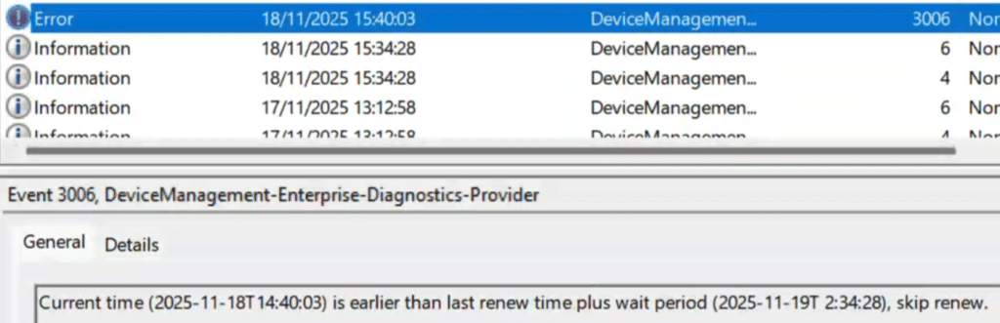
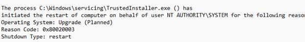
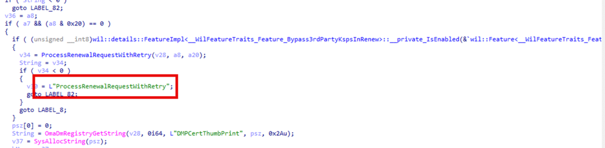
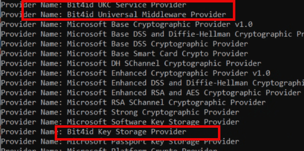
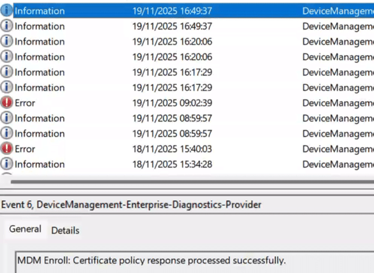
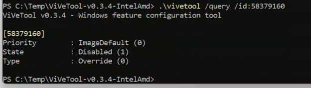

This blog is about a specific Intune Certificate KSP Renewal bug in Windows that caused Intune MDM device certificates to stop renewing on some Windows 11 23H2 devices and could quietly affect 24H2 as well when the same feature flag isn’t enabled.
Please Note: The issue only appears on machines with a specific third-party KSP (smart card) installed, producing no meaningful errors and making the renewal task appear to skip due to timing, when it’s actually failing well before that check.
The November 23h2 update finally introduced the missing fix inside Windows, and this post walks through how the problem appears, why only specific devices were impacted, and how the updated renewal flow resolves it.
Please note: This blog is based on my own testing and analysis, including the decompilation of publicly available Windows binaries. No NDA covered information, internal documentation, or private sources were used.
Introduction
It started with a message from someone on Reddit who had been watching their Intune MDM device certificates quietly expire without any warning. These were standard Windows devices that had never missed an Intune Certificate renewal cycle before. Suddenly, they stopped renewing altogether. Not early, Not late, Not at all. Even triggering the scheduled renewal task manually produced the same line every single time:
“Current time is earlier than last renew time plus wait period. Skip renew.”


There was nothing in the logs that explained why this was happening. The devices kept reporting as compliant. They kept receiving policies. They synced normally. Nothing in Intune looked suspicious. Yet the certificates stayed untouched. The only workaround that worked was wiping the device and re-enrolling it, which is not something anyone wants to do at scale. That was when the question landed with me: Is something inside Windows itself broken?
Where the KSP Investigation Really Began
The first surprise was that none of the usual indicators lined up. The registry still showed a RenewErrorCode of 0, which typically indicates the device encountered no errors during the renewal.

That was odd, as the service clearly believed a renewal was needed. Intune had already pushed the full MDM enrollment policy back down to the device, and that only happens when the service thinks the renewal window is open. So maybe the server initiated the renewal, but the device refused to take the first step. The scheduled task exhibited the same behavior across all affected devices.

It insisted that the renewal window had not been reached, even for devices that had already passed their renewal date. Some certificates had been expired for weeks. Even devices still within their renewal window refused to initiate anything. The timing logic seemed stuck in a nonsensical state.
At that point, it felt like the entire Windows certificate renewal flow was no longer responding to the conditions it had previously. Nothing in Intune had changed. Nothing visible (at least at that point in time) in Windows had changed. And then something else happened that made the situation even stranger.
When Every Device Suddenly Renewed in Bulk
The next week, she reached out again with something completely unexpected. Every device that had been stuck for weeks had its Intune MDM Device certificate renewed. Even the expired ones came back to life without anyone touching them. Nothing had been changed on the Intune side. Nothing in the scheduled task changed. Yet the certificate renewal pipeline came online as if someone had flipped a switch.
That made no sense, so we went back to the devices and pulled the logs again. The first clue surfaced in the System event log. Each device had rebooted because TrustedInstaller requested it.


That was the single consistent pattern across all affected machines. Checking the Software Distribution event log showed the reason for the reboot. Every device had installed the same cumulative update: the November update for Windows 11 23H2.

That was when everything clicked. The renewal pipeline did not magically recover. It recovered the moment the November update was installed. That meant the fix was built into Windows itself. From that point, the entire investigation moved into the code.
What Changed Inside Windows: KSP Feature
The real turning point came when I compared the October 23H2 build with the November 23H2 build. The November update introduced an updated Cert Renewal flow with a function called ProcessRenewalRequestWithRetry. This function was gated by the Bypass3rdPartyKPSInRenew feature. (Please take a couple of seconds to look at the name of that feature)


This function was utterly absent from the October 23H2 build. Without it, Windows had no choice but to revert to the older renewal routine. This is where the missing piece belonged, and the November update finally delivered it.
How the Old Renewal Flow Actually Worked
The legacy Certificate renewal path inside Windows always followed the same pattern. Before the CertEnroll could build a renewal request, the system initialized ALL available Key Storage Providers (PSZ in the picture).

The behavior was unconditional. The provider used by the MDM certificate made no difference, and any connection to the enrollment key was irrelevant. The old renewal flow simply went through each and very Key Storage Provider (KSP) on the system and tried to initialize them one by one. The old certificate renewal flow simply enumerated every KSP present on the device and attempted to initialize them one by one.
That behaviour was fine on a clean Windows installation using only Microsoft KSPs. But the moment a third-party KSP was installed, the certificate renewal pipeline became fragile. If any of those storage providers returned an error during initialization, the entire CertEnroll builder failed, and the Intune Certificate renewal step stopped instantly.
Because the old code didn’t retry, didn’t bypass the failure, and didn’t repair anything, the process exited quietly before the timing logic even ran. The device then logged the misleading line: “Current time is earlier than last renew time plus wait period. Skip renew.”
How the Updated Renewal Flow Fixes The KSP Initialization
The November build added ProcessRenewalRequestWithRetry and its helper SetUpLimitedCertRequest, and they change the behaviour exactly at the point where the old flow failed. Instead of initializing every KSP on the machine, Windows now initializes only the KSP that actually belongs to the Intune MDM certificate.

That behavior is controlled by the Bypass3rdPartyKPSInRenew feature. This avoids triggering the failing provider entirely. Because this new logic wraps everything in a retry loop, Windows can now detect when the stored provider or container values don’t match the actual key, switch to SetUpLimitedCertRequest, attempt a fallback via Initialize From Certificate, and finally repair the provider/container values via SetNewContainerAndProvider.

What used to be a single-point-of-failure became a recoverable and self-correcting flow.
The Real-World Pattern: Why Only Some Devices Broke
Once we began comparing devices across tenants, a clear pattern showed up. The devices that renewed cleanly had nothing unusual installed. Only the Microsoft KSPs were present, and the Intune Cert renewal flow never failed. The devices that kept failing all had one thing in common: a third-party KSP was installed. In our case, it was a commonly used smart card reader called Bit4ID


Those machines behaved exactly the way the old flow breaks. The moment the legacy renewal logic initialized all providers, it hit that third-party KSP, the provider returned an error during initialization, CertEnroll collapsed, and the renewal attempt vanished without a trace.
That aligned perfectly with what the Bypass3rdPartyKPSInRenew feature is designed to avoid.
The legacy flow initializes every registered provider before building the renewal request.
If a single one of the KSPs misbehaves, such as the Bit4id KSP does on some systems, the entire renewal flow halts without leaving an error behind. No event, no entry in the task history, nothing in the MDM logs.
The devices that never had Bit4id?
Renewal kept working as expected.
The devices that did have Bit4id?
Renewal stayed dead until the November update arrived, the moment the feature that bypasses third-party KSPs became active.
This was the missing correlation that made everything click.
One More Twist: The Fix Was in 24H2 Too, but not yet Flighted
There was one more detail that only became clear after testing the same renewal CSP on a 24H2 device.
Even though 24H2 already shipped with the new renewal engine, the behaviour was identical to the broken 23H2 October build. The device ignored the modern renewal flow, skipped the limited cert request path, and did nothing when the renew CSP was triggered manually.


That made no sense at first, because the 24H2 DLL clearly contained the full renewal pipeline and the KPS fix. So, I checked the feature state. The Bypass3rdPartyKPSInRenew feature, which I showed you before, that unlocks the ProcessRenewalRequestWithRetry path, was disabled. Not missing….Disabled.


After enabling it with ViVeTool, rebooting, and running the renewal CSP again, the certificate was renewed immediately. No delays. No errors. It simply worked.
This confirmed two things: First, Microsoft had already shipped the fix inside 24H2.
Second, the fix was being rolled out gradually through feature flight (controlled feature rollout) and was not enabled by default on all systems. This also explains why the broken behavior was visible on both 23H2 and 24H2 devices until the KSP fix was promoted through cumulative updates and feature rollouts. If you want to read my blog about the controlled feature rollout, you can find it here:
Insert LINK
Closing Thoughts
The renewal failures on Windows 11 23H2 were never about timing or Intune. The legacy flow failed when it tried to initialize every KSP on the device, and a single misbehaving provider was enough to stop the process without any trace. The November update finally added the missing repair logic: it bypasses irrelevant KSPs, checks the real key state, rebuilds the request when needed, and corrects the provider and container values so renewal can continue.
Once that logic was enabled, every stuck device resumed after a single reboot. Nothing changed in Intune. Only Windows did. This updated flow is clearly the direction Windows will follow going forward—far more resilient, far less dependent on assumptions, and no longer vulnerable to a single faulty KSP.